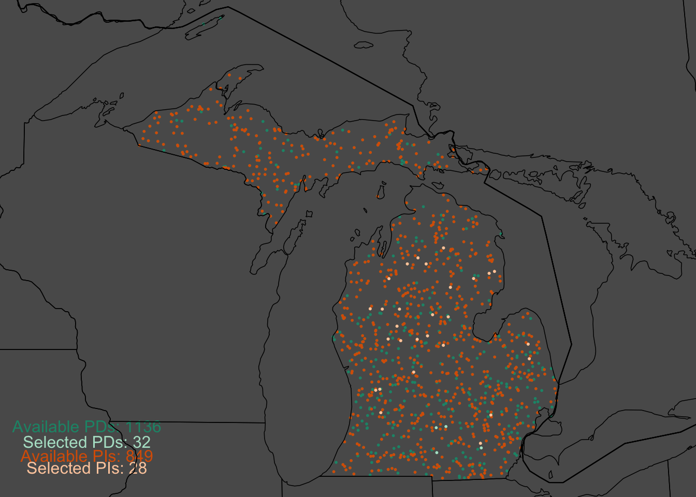
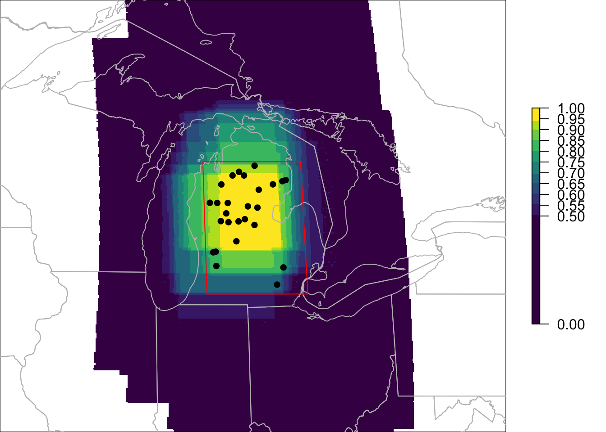
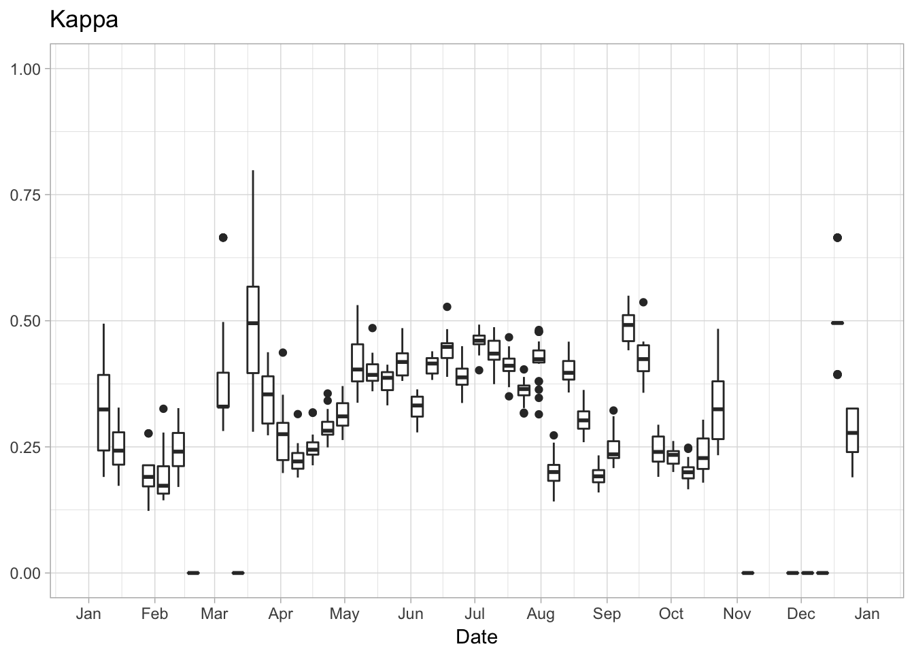
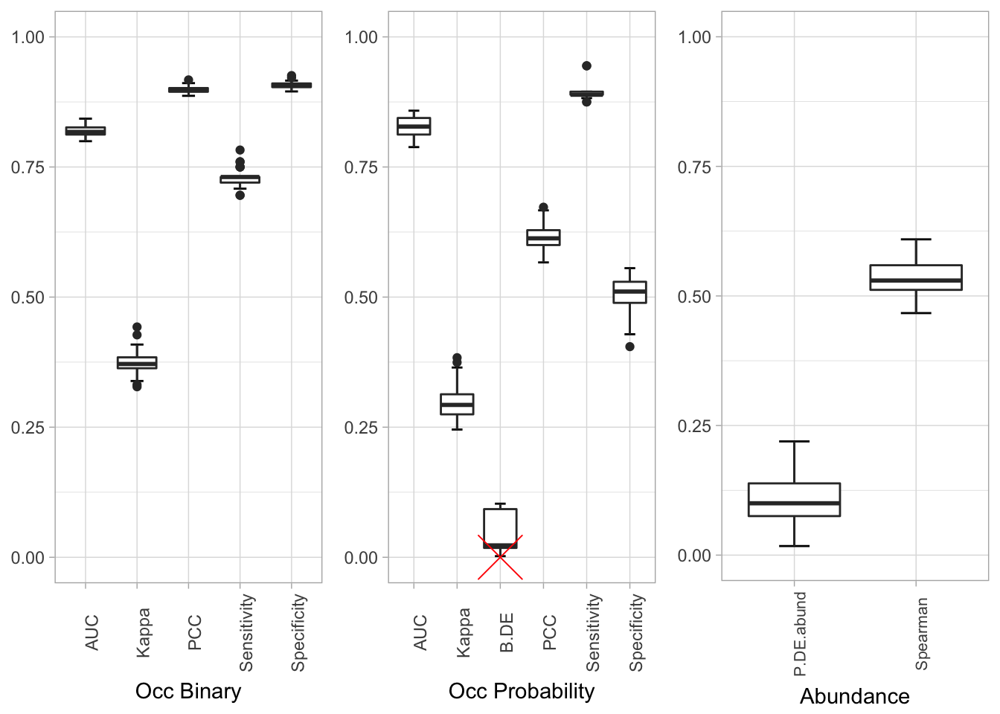
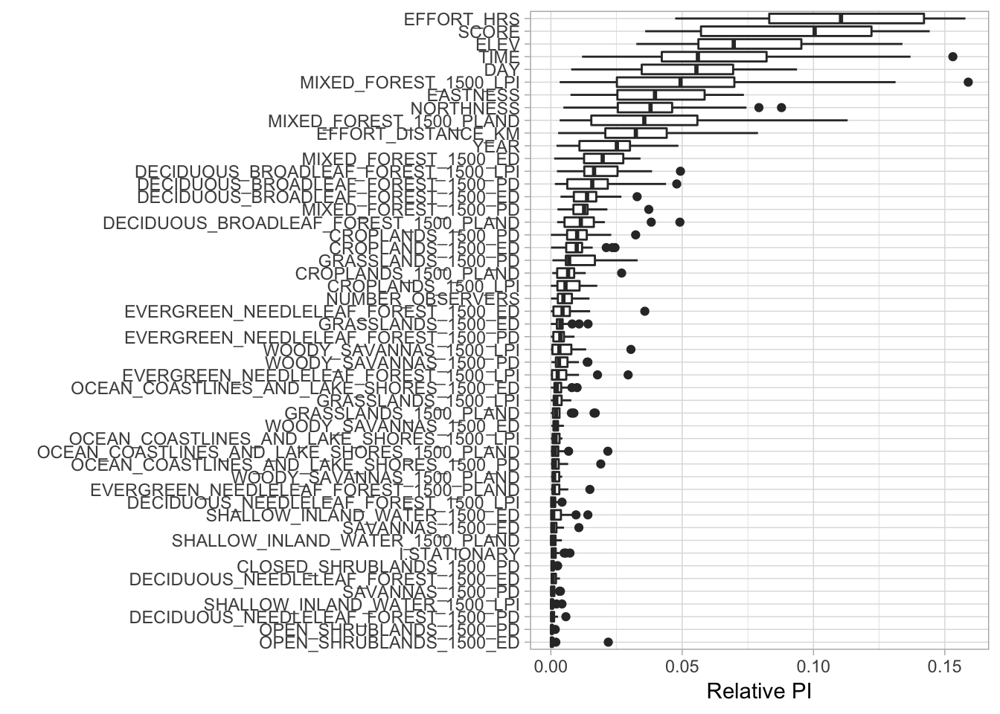
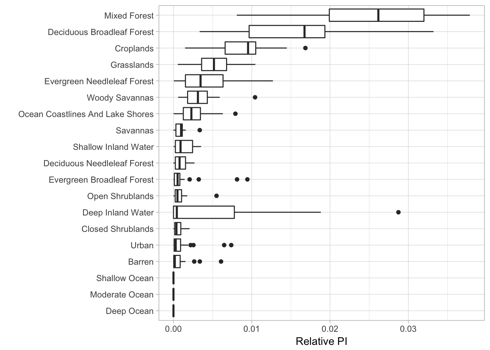
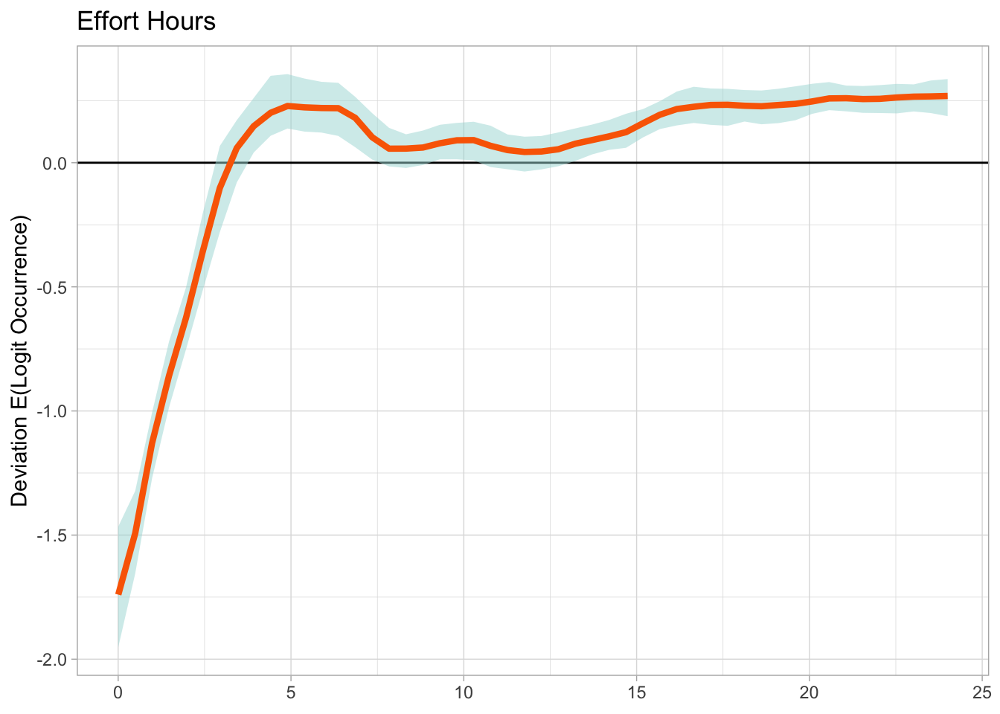

Beyond estimates of occurrence and relative abundance, the eBird Status and Trends products contain information about predictor importance and partial dependencies, as well as predictive performance metrics (PPMs). The PPMs can be used to evaluate statistical performance of the models, either over the entire spatiotemporal extent of the model results, or for a specific region and season. Predictor Importances (PIs) and Partial Dependencies (PDs) can be used to understand relationships between occurrence and abundance and predictors, most notably the land cover variables used in the model. When PIs and PDs are combined, we can depict habitat association and avoidance, as well as the strength of the relationship with those habitats. The functions described in this section help load this data from the results packages, give tools for assessing predictive performance, and synthesize information about predictor importances and partial dependencies.
IMPORTANT. AFTER DOWNLOADING THE RESULTS, DO NOT CHANGE THE FILE STRUCTURE. All functionality in this package relies on the structure inherent in the delivered results. Changing the folder and file structure will cause errors with this package.
Data are stored in four files, found under \<six_letter_code-ERD2016-PROD-date-uuid>\results\abund_preds\unpeeled_folds, as described below.
\<six_letter_code-ERD2016-EBIRD_SCIENCE-date-uuid>\results\abund_preds\unpeeled_folds\pd.txt \<six_letter_code-ERD2016-EBIRD_SCIENCE-date-uuid>\results\abund_preds\unpeeled_folds\pi.txt \<six_letter_code-ERD2016-EBIRD_SCIENCE-date-uuid>\results\abund_preds\unpeeled_folds\summary.txt \<six_letter_code-ERD2016-EBIRD_SCIENCE-date-uuid>\results\abund_preds\unpeeled_folds\test.pred.ave.txt
The ebirdst package provides functions for accessing these, such that you should never have to handle them manually, granted that the original file structure of the results is maintained. These data are stored at “stixel centroids,” which are the centers of the independent, partioned model extents (see Fink et al. 2010, Fink et al. 2013).
The first step when working with stixel centroid data is to load the Predictor Importances (PIs) and the Partial Dependencies (PDs). These files will be used for all of the functions in this vignette and are the input to many of the functions in stemhelper.
# DOWNLOAD DATA
# Currently, example data is available on a public s3 bucket. The following
# download_data() function copies the species results to a selected path and
# returns the full path of the results. Please note that the example_data is
# for Yellow-bellied Sapsucker and has the same run code as the real data,
# so if you download both, make sure you put the example_data somewhere else.
species <- "yebsap-ERD2016-EBIRD_SCIENCE-20180729-7c8cec83"
sp_path <- download_data("~/tmp/", species = species, example_data = TRUE)
print(sp_path)## [1] "~/tmp//yebsap-ERD2016-EBIRD_SCIENCE-20180729-7c8cec83"When working with Predictive Performance Metrics (PPMs), PIs, and/or PDs, it is very common to select a subset of space and time for analysis. In ebirdst this is done with a list object with a particular structure. This list object defines the region and season for analysis and is passed to many functions in ebirdst. To review the available stixel centroids associated with both PIs and PDs and to see which have been selected by a spatiotemporal subset, use the map_centroids function, which will map and summarize this information.
lp_extent <- list(type = "rectangle",
lat.min = 42,
lat.max = 45,
lon.min = -86,
lon.max = -83,
t.min = 0.425,
t.max = 0.475)
map_centroids(pis = pis, pds = pds, st_extent = lp_extent)
Similarly, the calc_effective_extent will analyze a spatiotemporal subset of PIs or PDs and plot the selected stixel centroids, as well as a RasterLayer depicting where a majority of the information is coming from. The map ranges from 0 to 1, with pixels have a value of 1 meaning that 100% of the selected stixels are contributing information at that pixel. The function returns the RasterLayer in addition to mapping.
par(mfrow = c(1, 1), mar = c(0, 0, 0, 6))
pi_extent <- calc_effective_extent(lp_extent, pis = pis, path = sp_path)
After reviewing the subsetted information and understanding the spatial distribution of information contributing to the subsetted data, it is important to review predictive performance metrics, to get an idea as to whether there is substantial statistical performance to evaluate information provided by PIs and PDs (as well as abundance and occurrence informtion).
The plot_binary_by_time function analyzes a species’ entire range of data and plots predictive performance metrics by a custom time interval (typicall either 52 for weeks or 12 for months).
plot_binary_by_time(sp_path, metric = "Kappa", n_time_periods = 52)
The plot_all_ppms function provides all available predictive performance metrics and is important for determining predictive performance within a spatiotemporal subset region and season. This function is also useful in comparing the performance between subsets.
plot_all_ppms(sp_path, lp_extent)
Once predictive performance has been evaluated, exploring information about habitat association and/or avoidance can be done using the PIs and PDs. The plot_pis function generates a bar plot showing a rank of the most important predictors within a spatiotemporal subset. There is an option to show all predictors or to aggregate Fragstats by the land cover types.
# with all classes
plot_pis(path = sp_path, pis, st_extent = lp_extent, by_cover_class = FALSE)
# aggregating fragstats for cover classes
plot_pis(path = sp_path, pis, st_extent = lp_extent, by_cover_class = TRUE)
Complementary to plot_pis, the plot_pds function plots the partial dependency curves for individual predictors, with various levels of detail and smoothing available.
mypds <- plot_pds(pd_name = "EFFORT_HRS",
pds = pds,
st_extent = lp_extent,
pointwise_pi = TRUE,
stixel_pds = FALSE)
Fink, D., Damoulas, T., & Dave, J. (2013, July). Adaptive Spatio-Temporal Exploratory Models: Hemisphere-wide species distributions from massively crowdsourced eBird data. In AAAI.
Fink, D., Hochachka, W. M., Zuckerberg, B., Winkler, D. W., Shaby, B., Munson, M. A., … & Kelling, S. (2010). Spatiotemporal exploratory models for broad‐scale survey data. Ecological Applications, 20(8), 2131-2147.